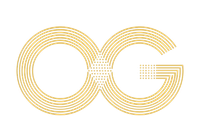

El futuro es orden.
orden
global
ES
EN
AUKA
ORO
÷55
5550
1
01
02
03
÷55
5550
QBFT
10s
100%
chainId
5550
ogb
ORIGEN
Genesis ID
MyTokenPay
ordenscan
PULSE2CHAT
AU-RA
AU-RA ·
12
15
18
21
24
Orden Global
ORDEN
GLOBAL
Orden Global
·
·
ES
EN
AIR TOUCH
AU-RA
Ajustes de llamada
Micrófono
Cámara
Listo